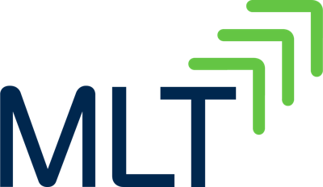

Product · Design · Technology
TaliyahHarvey
I build human-centered products that actually make a difference for people, mixing design, technology and business.

Places I've worked, led and belonged




About
Builder first, with a soft spot for people.
I have a software background, but what I love most is making things people actually use and feel. I'm finishing a bachelor's and master's at USC in Arts, Technology and the Business of Innovation, where I get to design, prototype, code and pitch in the same week.
- Bay AreaWhere it started
- USCBachelor's and master's, Arts, Technology and the Business of Innovation
- SalesforceBuilt Branch Out, connecting college students to open source
- Astera LabsIndustry experience in hardware tech
- CommunityAlpha Kappa Alpha, BBSA and nonprofit work
Projects
Three lines, one interchange.
Arts, Technology and the Business of Innovation, drawn as a map. Every project rides the lines it draws on, and they all pass through the same place. Tap a stop to see more.
- Design
- Technology
- Business
Contact
Let's build something together.
Open to product, design and innovation roles, collaborations and good conversations.